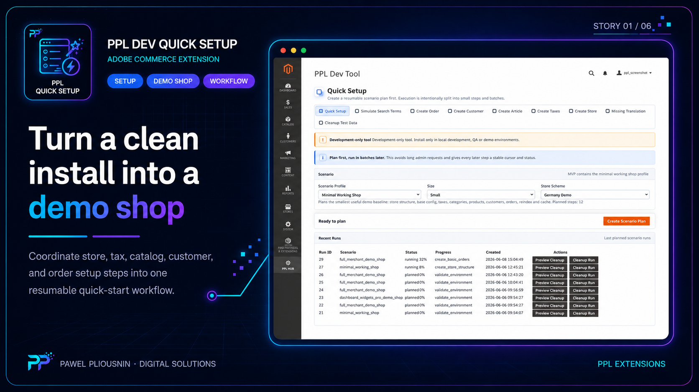
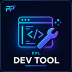
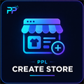
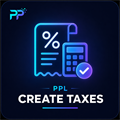
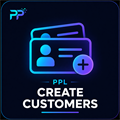
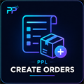
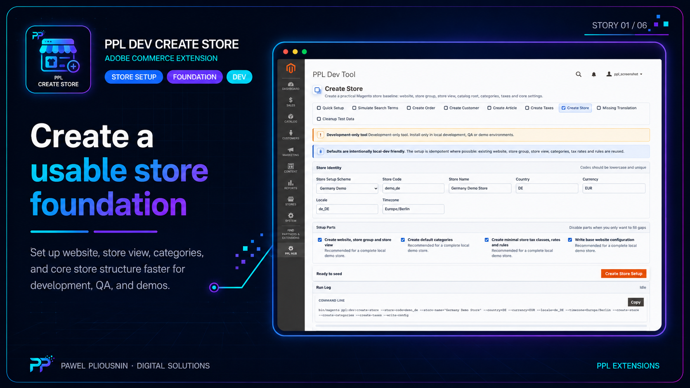
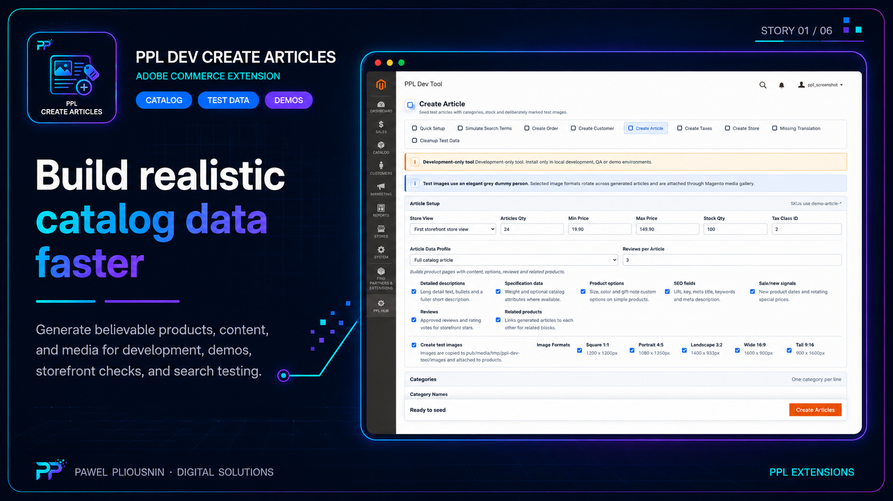
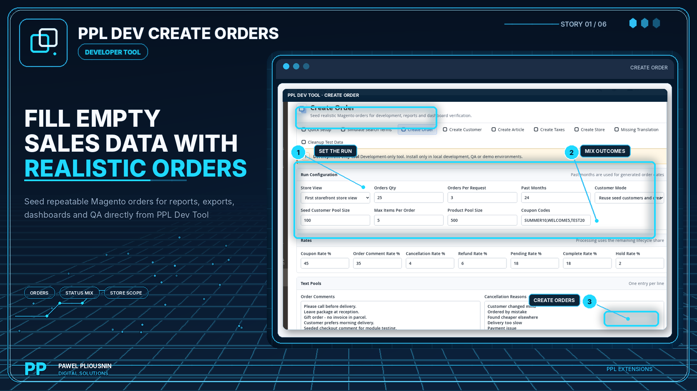

Dev Quick Setup
Scenario planner and resumable orchestration shell for full demo or minimal working shop setup.
PPL Dev Quick Setup coordinates store, tax, article, customer, order, reindexing, cache and readiness steps into resumable scenarios. Generator modules provide the concrete data building blocks for development, QA, demo and disposable staging environments.

A fresh Magento install is empty. Creating a credible demo or QA shop normally means many manual admin steps, throwaway scripts and fragile ordering. When a long setup fails halfway through, teams often start again. The dev bundle turns that into a named, resumable workflow.
Minimal working shop, merchant demo shop or project-specific generator run.
Store, tax, articles, customers and orders run in coordinated steps instead of separate guesswork.
Reindex, cache and readiness checks confirm that the shop is usable for QA, demo or extension testing.
Use Quick Setup as the orchestrator and install the concrete generator modules needed by your scenario.
Scenario planner and resumable orchestration shell for full demo or minimal working shop setup.

Shared admin area, cleanup and support tools for development workflows.

Store setup and validation data for realistic development and demo environments.

Tax setup support for demo and QA scenarios.
Catalog/product seed data for shops that need products before search, reports or checkout can be tested.

Customer seed data for account, segmentation, report and checkout testing.

Order generation for report demos, payment/revenue flows and realistic sales history.
Translation QA helper for internationalized admin and storefront work.

Build the base shop state before reports, search or checkout flows are tested.

Create product data for search, filters and merchandising checks.

Generate order history so report and dashboard modules can be demonstrated.